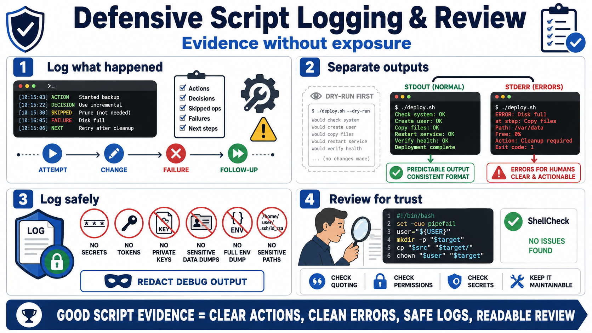

Logging, Review, and Operational Evidence
Connecting to LMS... Progress: in progress

Narration
A defensive script should leave enough evidence to understand what happened without exposing sensitive data. Good logs identify major actions, decisions, skipped operations, failures, and follow-up needs. During troubleshooting or incident review, operators need to know what the script attempted, what changed, what failed, and where to look next.
Separate normal output from error output. Machine-readable output should remain predictable when another tool consumes it. Errors should go to the error stream and should be meaningful enough for humans to act on. A consistent message format helps both people and automation. Dry-run output can be useful for risky changes when it clearly reports intended actions without modifying state.
Safe logging avoids secrets and unnecessary sensitive details. Do not dump tokens, passwords, private keys, customer data, full environments, or sensitive paths into logs. Avoid noisy debug modes in production automation unless they have been reviewed and redacted. A useful log says enough to support accountability without becoming a data exposure.
Review is part of operational evidence because readable scripts are easier to approve, troubleshoot, and improve. Tools such as ShellCheck can catch common shell mistakes, but human review still matters. Reviewers should look at input handling, quoting, permissions, secret handling, error behavior, and whether the script is simple enough for the next maintainer to understand.